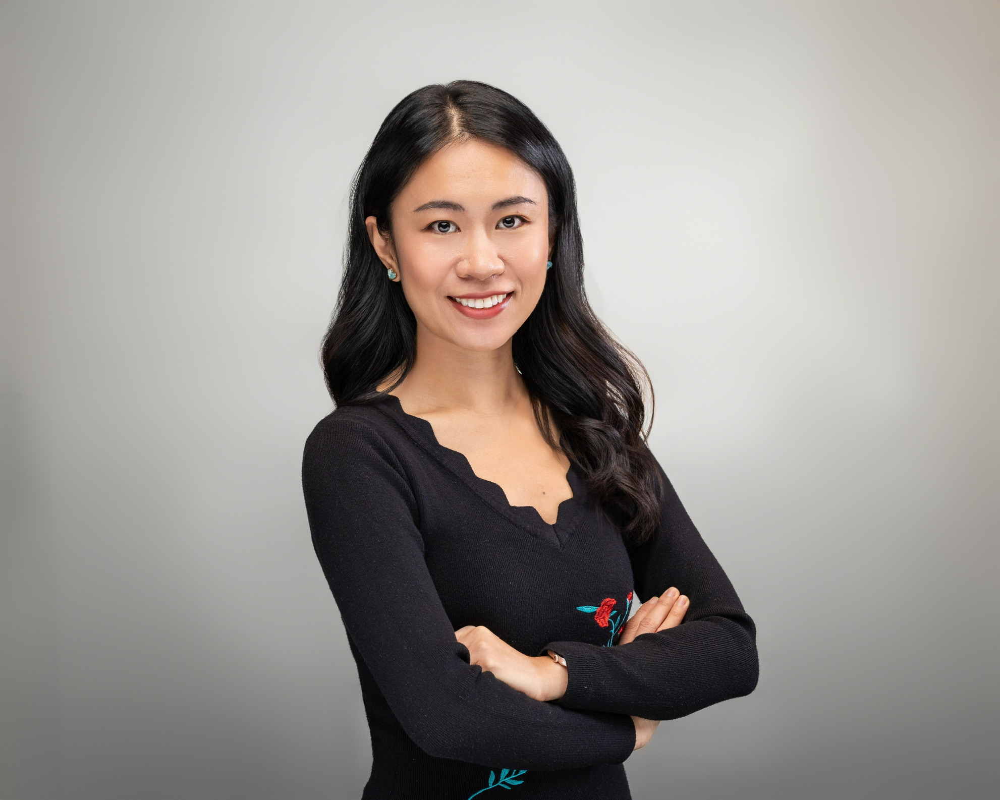

About Me
I graduated from college in China with a major in Japanese and spent over eight years working as a language instructor, helping students develop their linguistic and cultural understanding. Teaching not only strengthened my communication skills but also deepened my appreciation for cross-cultural exchange. However, after moving to the United States, I felt the need for a career change—one that would challenge me in new ways and offer broader opportunities. This realization led me to pursue a master's degree at the University of Florida, where I have been expanding my skill set beyond language education. Now, in my final semester, I am excited to take the next step in my professional journey and transition into the world of coding.
Beyond academics, I have a deep passion for learning and exploration. Traveling has been a significant part of my life, and I have had the privilege of visiting over 30 countries, immersing myself in different cultures, histories, and ways of life. This exposure to diverse perspectives has not only enriched my worldview but has also fueled my curiosity about technology and how it connects people across the globe. In addition to travel, I enjoy staying engaged with my community, whether through volunteering, attending cultural events, or participating in discussions that promote inclusivity and global awareness.
Because of my partner's job, we frequently relocate to different parts of the world, which has made adaptability an essential skill in both my personal and professional life. This ever-changing lifestyle has also influenced my career aspirations—I am seeking a role that provides flexibility and the ability to work remotely.